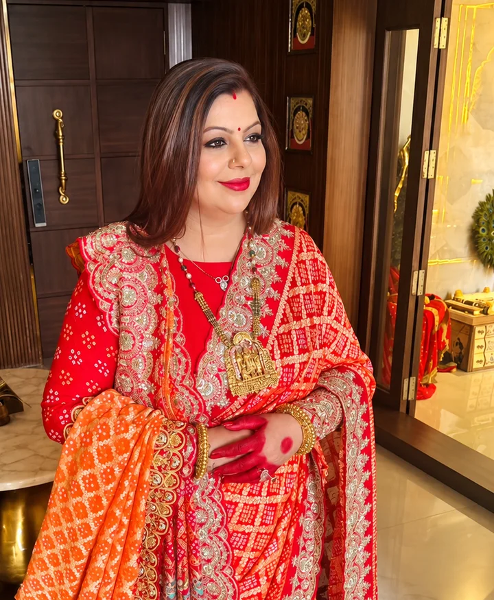

Personal and professional challenges
Puneet shares his experience of Narayani’s guidance through personal and professional challenges.
PuneetWorks in banking
Astrology with NarayaniGuidance for a brighter tomorrow
Explore a career, relationship or timing question with Narayani, reading relevant birth-chart themes alongside your real circumstances and choices.
Astrology with NarayaniGuidance for a brighter tomorrow
Explore a career, relationship or timing question with Narayani, reading relevant birth-chart themes alongside your real circumstances and choices.
Begin your journey

Meet your guide
Narayani reads the chart themes relevant to your question beside your real circumstances. She explains her reasoning in plain words, and the decision stays with you.
Upay tab kaam karta hai jab dimaag kaam karta hai.
A remedy works when the mind works. — Narayani Garg
Client voices
Real clients, in their own words. Tap a film to hear their experience of Narayani’s guidance.
Personal experiences of Narayani’s guidance.
Individual experiences vary.
Personal and professional challenges
Puneet shares his experience of Narayani’s guidance through personal and professional challenges.
PuneetWorks in banking
The broader picture
“Whenever we have to take a major decision, we consult her, and she tells us the broader picture. The response is so accurate, and the availability is amazing.”
Navleen S.On major family decisions
A clearer mind · A calmer you
The question you bring
A useful reading starts with the decision you are actually facing, not a long explanation of every planet in your chart.
A new offer, leadership, stalled progress or a move into business.
Start with thisMarriage timing, matching, repeated delays or expectations you want to understand.
Start with thisA property, study path, launch or difficult period to discuss.
Start with thisHow Narayani approaches it
Narayani reads the relevant chart beside your account of events. Your habits, responsibilities and practical choices remain part of the conversation.
What a reading brings together
Focus on houses and chart themes connected with your question.
Consider periods and transits alongside real opportunities and constraints.
Explore your expectations. What you choose to do remains important.
Read together · Decided by you
Your consultation options
These are starting points for a consultation, not separate results that a chart can promise.
Work changes, leadership, business direction, partnerships and expansion questions.
Marriage timing questions, delay, kundali matching and relationship context.
Buying, selling, moving, signing or launching, considered alongside practical facts.
Study choices, focus and questions about the path ahead.
A personal chart reading or a question about the period you are experiencing.
Explain what you know. Ask which reading is appropriate when the birth time is missing or approximate.
Why her approach matters
Explore your beliefs and responses alongside the reading.
Ask questions and understand the reasoning. No threats or pressure to purchase a remedy.
Begin with the NNG team
Share your question. The team will explain the appropriate reading and appointment details.
Begin with the NNG team
Share your question. The team will explain the appropriate reading and appointment details.
How it works
A short message about what you want to discuss.
Confirm scope, format, duration, fees and availability.
Book only after the details work for you.
General Astrology enquiry
Your message
Hello NNG team, I would like to enquire about Astrology.
Please share the appropriate scope, format, duration, fees and availability.
now ✓✓You review and send the message yourself. Opening WhatsApp does not book or pay for a session. Please keep private records and other people’s details out of the first message.
Before booking
Say so. An approximate or missing time affects the reading; ask about options rather than inventing an exact time.
No. Consider the interpretation alongside your real circumstances. Career, relationship, legal and financial decisions remain yours.
The team confirms scope, appointment format, duration, fee and availability. This page reserves no session and takes no payment.
Obtain adult consent first; parent or guardian consent is needed for a child. No third-party data is requested here.
Astrology is an interpretive tradition, not a reliable prediction or a substitute for professional advice.
Her book
Twenty-one days of reflection and everyday inner practice, written in the same mind-first way she guides every conversation.
Her approach, in three ideas
Her clients include Banking professionalsCEOs of MNCs & core sector companiesWomen entrepreneursPrinting, education & hospitals